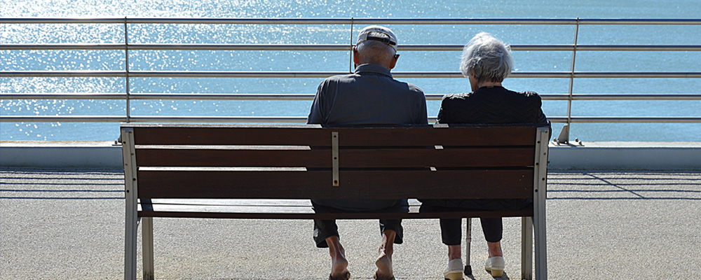
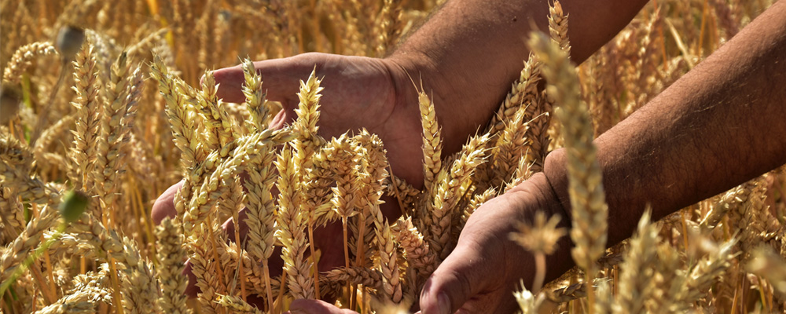
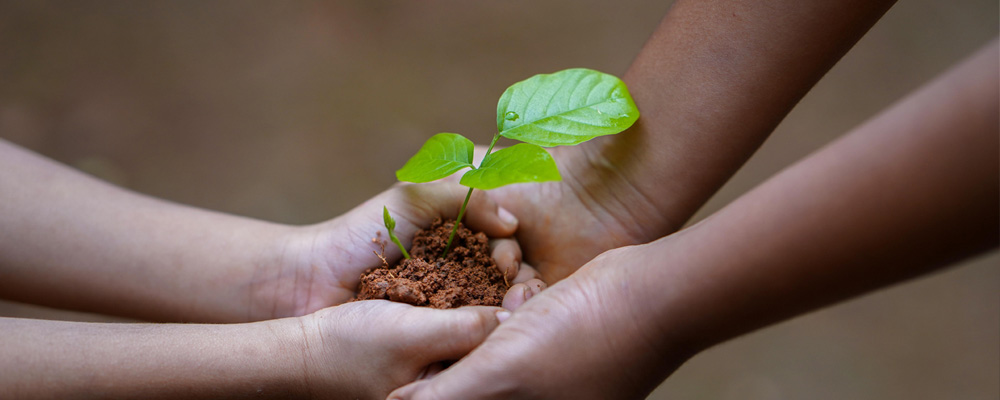
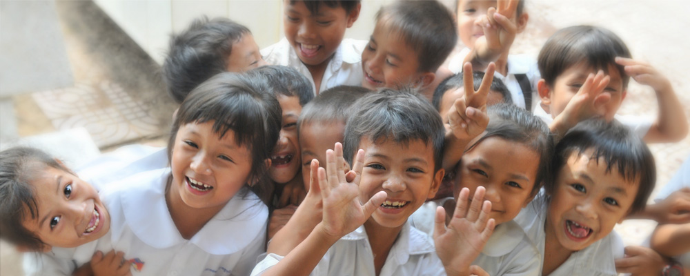
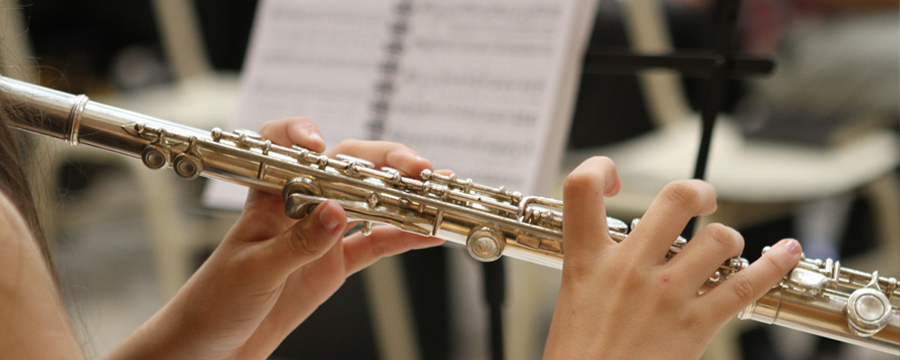
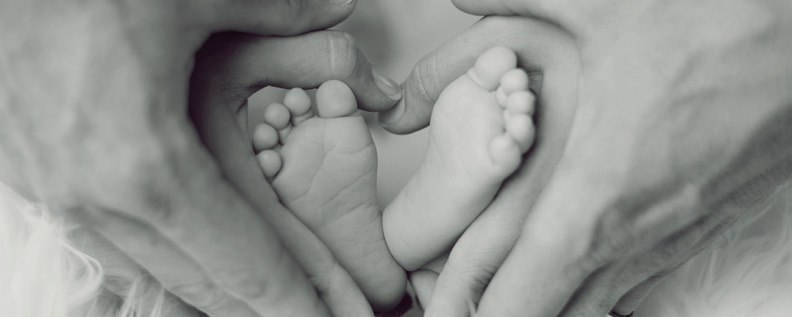

- 농·어촌 어르신들을 위한 경로당 봉사활동
- 농·어촌 지역의 노후한 경로당 환경 개선 활동을 시작으로
1부서 1경로당 결연활동을 전개하여 지역 內 82개 경로당과
지속적인 유대활동을 전개하고 있으며, 특히 의료 접근성이
낙후한 산간 지역 마을을 대상으로 발마사지 봉사활동을 전개하는
등 농·어촌지역 어르신들의 복지 증진을 위한 사회공헌 활동을
지속적으로 실시하고 있습니다.

- 자매마을과 상생을 위한 직거래 장터 실시
- 매년 추석을 맞아 지역 농업인의 소득 창출과 지역특산물 판로 개척을
위해 지역 內 자매마을 및 농업단체에서 참여하는 직거래 장터를 2013년부터
운영하고 있습니다. 특히 지역에서 생산되는 특산품을 판매하여
지역 농업인을 지원하고 있습니다.

- 희망누리사업 전개
- 지역사회의 소외된 계층 및 마을공동의 자활/자립을 돕고, 수익 창출을
할 수 있도록 특용작물 재배용 비닐하우스, 관광휴양센터 건립, 장애인
직무교육센터 건립 등을 2010년부터 계속해서 지원하고 있습니다.

- 다문화가정 이동도서관 건립지원
- 다문화 가족들의 한국어 습득력 향상 및 가족 프로그램을 통한
가족관계 향상을 위해, 거제시 다문화가족지원센터와 연계하여
도서관을 설립하여 운영을 지원하고 있습니다.

- 찾아가는 작은음악회 실시
- 사내 임직원들의 재능기부 활동의 일환으로 문화 소외계층인 장애인
복지시설 생활자 및 병원 입원환자를 대상으로 마술 공연, 악기 연주,
풍물 등 문화공연을 2009년부터 진행하여 대상자들의 만족도를 높이고 있습니다.

- 사랑과 소통의 김치나눔 대축제
- 지역의 소외계층을 위해 김치나눔 대축제를 2013년부터
매년 실시해오고 있으며, 특히 지역 주민들과 함께 1만 포기를 버무려
전달하는 행사로 지역사회 대표 김장 행사로 자리잡고 있습니다.
또한 겨울철 지원받은 김장김치 소진 시점인 6월에는 물김치를 담아
지역 소외계층에 전달하고 있습니다.
- 위기가정 지원사업 전개
- 지역사회의 복지 사각지대에 있는 이웃들에게 실질적으로 도움이 되는
사업을 진행하기 위해 2014년부터 위기가정 지원사업을
전개해 오고 있습니다. 임직원 모금으로 조성된 기금을 저소득층에서
긴급히 필요로 하는 생계비, 장학금, 치료비, 주택수리비용
등으로 지원하여 지역의 소외계층들이 꿈과 희망을 가지고 살아갈 수
있도록 지원하고 있습니다.
또한 활동제한형 청·장년 1인가구의 사회적 안정망을 구축,
고독사 고위험군의 관계망 형성 및 스마트시스템 IOT기반 안전서비스를 지원하고 있습니다.
